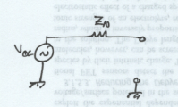
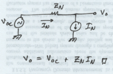
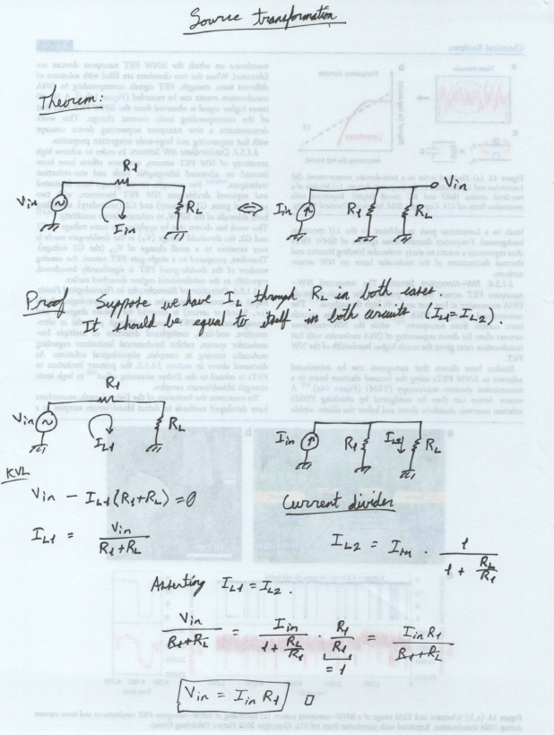

Analog Circuits

Lesson 11: Thévenin/Norton equivalent circuits and source transformation
Derivation of Thévenin's Theorem
Let's use superposition to turn everything into voltage and current dividers. That way, you don't have to do too much math at all, and you can worry about designing circuits instead.
So let's assume you've been solving circuits for a while. It's kind of old hat to you at this point. While analyzing a lot of circuits, you noticed that some algebraic forms kept coming up, no matter what combination of impedances you had: \[ V_o = A_m V_m \] and \[ V_o = Z_n I_n. \] The first one is a voltage gain, or a voltage division. Remember the voltage divider expression? In a voltage divider, \[ V_o = \underbrace{\frac{1}{1 + \frac{R_1}{R_2}}}_{A_m} V_{in}. \] So a voltage divider is in the voltage gain form above. We can also see that the second form is just Ohm's law for an arbitrary impedance \( Z_x \). It turns out that these two forms are all you need to get the answers for any arbitrary linear circuit by superposition. If we want to keep everything general, so our math works for every linear circuit, we should use sums. That's because we don't know how many gain terms or impedances are going to show up in any given circuit. So, let's write \( V_o \) using superposition for \( M \) voltage gain terms and \( N \) arbitrary impedances as \[ V_o = \sum_{m=1}^{M} A_m V_m + \sum_{n=1}^{N} Z_n I_n. \] That's the general solution for the output voltage of any circuit! But, usually, you want to be able to connect different things to the output. Maybe you want to plug your synthesizer circuit into a different amplifier. How would we handle that? Is it worth going through all the algebraic work again? No way; I won't do all that work over and over again.
We can account for this by separating out one of the Ohm's Law terms, so we end up with \[ V_o = \sum_{m=1}^{M} A_m V_m + \sum_{n=1}^{N - 1} Z_n I_n + Z_N I_N. \] We're assuming here that \( I_N \) is a current source at the load terminals. Connecting something across the "load terminals" just means you're connecting it at the output, replacing whatever element was already there. (The element that gets replaced is called the "load".)
Now, if you pull out the current source \( I_N \), that means that you put an open circuit at that point. The remaining part of the output voltage expression is called the open-circuit voltage: \[ V_{OC} = \sum_{m=1}^{M} A_m V_m + \sum_{n=1}^{N - 1} Z_n I_n. \] Let's rewrite our general solution using this new substitution. \[ V_o = V_{OC} + Z_N I_N. \] Let's think about \( Z_N \) for a moment. Is it the impedance of the load itself, or is it the impedance seen by the load? (In this case, the load is the current source \( I_N \).) It's actually the impedance seen by the load. The reason why is because we've essentially converted our arbitrary circuit to this.
If you add a load, the result looks like a voltage divider.
And this circuit reproduces the equation we came up with for \( V_o, \) just like we'd hoped. But we still have to figure out what the value of \( Z_N \) is. You can do that by setting all of the \( V_m \) and \( I_n \) terms equal to zero, that is, setting all the voltage sources and current sources inside the circuit to zero. If you do that, \( V_{OC} = 0 \). Then you have \[ V_o = Z_N I_N \] \[ \implies Z_N = \frac{V_o}{I_N} \iff V_m, I_n = 0. \] So you have to set all the internal voltages and currents to zero to be able to solve for \( Z_N \). We call \( Z_N \) the Thévenin equivalent impedance, and it's typically represented with a different symbol, \( Z_{Th} \). The "Th" is for "Thévenin".
(Derivation adapted from "Fundamentals of Circuits, Electronics, and Signal Analysis" by Kendall L. Su. It's basically the same derivation, but with fewer summation indices, for clarity.)
Source transformation
Before we can transform the Thévenin circuit to its Norton equivalent, we have to prove whether we're allowed to do that. We are, and in fact it's a pretty short proof.
Norton equivalent circuit
You can derive this in exactly the same way as we just did for Thévenin's Theorem. The key difference is that you use the \( I = \frac{V}{Z} \) form of Ohm's Law. Everything else is the exact same. An easier way to prove it is through source transformation. We already proved that part above, so we're good there. Change \[ V_{in} = I_{in} R_1 \] to \[ V_{OC} = I_{N} Z_{Th}, \] and you're good to go. Basically, since the Thévenin equivalent is already a voltage divider, the Norton equivalent follows trivially using source transformation.
Bottom line. You can convert any linear circuit into a voltage divider by using Thévenin's Theorem. That can be converted to a Norton current divider through source transformation. You do this by finding the open-circuit voltage across and the short-circuit current through your load, then building the Thévenin equivalent circuit from those values. There are sometimes ways to get around having to find both the open-circuit voltage and the short-circuit current, but in general, you have to find both.